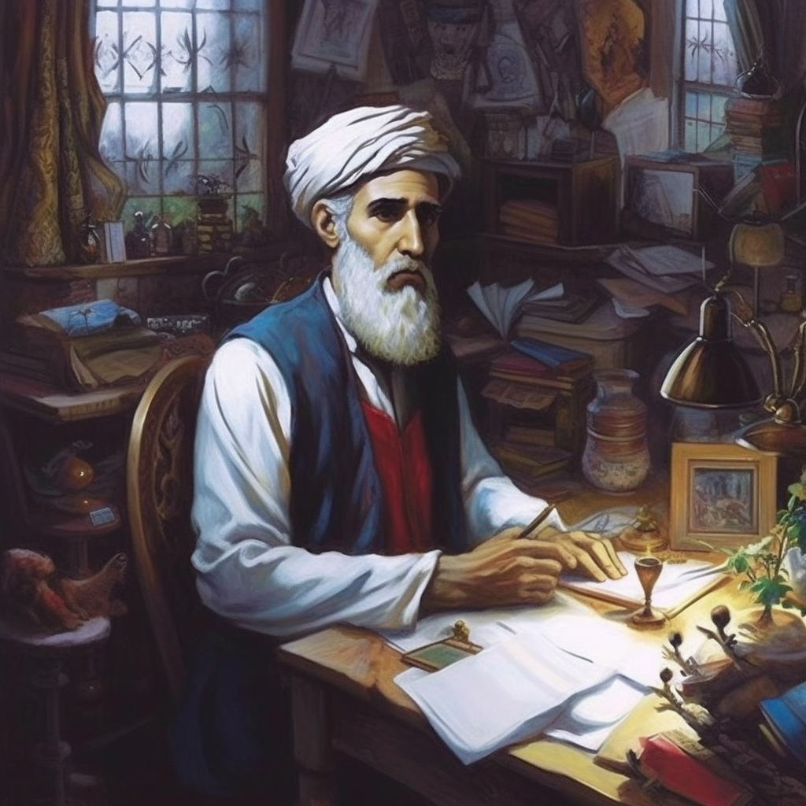

«Жалоба на старость» и поэма о жизни
Совершенство поэзии Рудака во всем ее великолепии проявилось в его законченной оде, которая называется «Жалоба на старость». Эта ода начинается с упоминания очень простой и очень естественной части человеческой жизни - выпадения зубов в старости, которая сама по себе не привлекает ничьего внимания в силу своей очень простой и естественной природы. но поэт написал ее так, что не только читатель и слушатель не останутся к ней равнодушными, но обязательно проявят интерес, чтобы сопереживать автору и лучше и ближе узнать его состояние. С необыкновенной любовью и искренностью говорит о своих зубах седовласый мальчик, у которого стерлись и выпали зубы. Он сравнивает свои зубы с сияющей лампой, далеким кораллом, утренней звездой и дождевой каплей и подносит их один за другим, потому что они белые и проволочные. по этим очень простым, но очень красивым сравнениям поэта ясно чувствуется, что они блестящие, яркие и белые, как проволока. по стилю письма автора с акцентом и повторением и мягкому тону видно, что зуб был ему очень дорог. Рудаки настолько поглощен выражением своей любви к зубу, что в данном случае забывает общепринятые правила и законы од того периода и рифмует первые четыре строфы одну за другой, а пятую строфу, что является выражением признания горькая для него истина, вопреки общему правилу классической поэзии строф и отделяющая поздние стихи поэмы
Азбаски эътирофи ҳақиқати талхи саросар судану рехтани дандон барои шоир бағоят аламангез ва ҳасратомез аст, суханони ӯ дар ин мисраъ тағйири оҳанг карда, ба дард гуфта шудаанд:
Маро бисуду фурӯ рехт, ҳар чӣ дандон буд,
Набуд дандон, лобал чароғи тобон буд.
Сапеду симзада буду дурру марҷон буд,
Ситораи саҳарӣ буду қатраборон буд.
Яке намонд кунун з–он ҳама бисуду бирехт.
Остальные три строфы, с которых, по нашему мнению, начинается вторая часть оды, состоят из вопросно-ответного процесса поэта с его воображаемым собеседником, который несколько позже будет называться от него «Мохрой». Упоминание в произведении разговора поэта с собеседником полностью обусловлено требованиями логики стихотворения, и автор подготовил устойчивую психолого-художественную основу для его появления. он очень хорошо заметил, что его собеседник, выслушав его теплые и нежные, но грустные и ностальгические слова о его прекрасных зубах, об их разрушении и выпадении, неизбежно и невольно оборачивается к нему и спрашивает: «Что случилось?», «Что случилось?» » и таким образом он, конечно, погрузится в размышления, чтобы узнать причину этого. Также поэт прекрасно знал, что его собеседник — тот мускусный луноликий человек — вероятно, подозревал, что причиной тому является судьба кайвана, т. е. невезение и долгая жизнь в старости. однако настоящая причина такого положения в другом, и только он сам может сказать это лучше всего. Напряжение и тревога поэта, вызванные тоской и болью потери зубов луноликому, мускусно-волосому собеседнику, усилились и повлияли на тон и композицию этих трех стихов. слова автора состоят из коротких вопросов и ответов между поэтом и луной. Повторение и ударение некоторых слов и словосочетаний, таких как «что было?», «нахси кайван», «буд», отрицательное причастие «на», согласная «з» в словосочетаниях «долгая жизнь» и «казой яздон» и т. д. ., сделать этот тон сильнее. и увеличить движение образа в стихотворении.
Махрои: - "Как это было? Как это было с Кайваном?" поэт: - "не было ни долгой жизни, ни долгой жизни!" » Махрои: «Что случилось?» - Я не хочу сказать, что это было невезение"
Хотя Рудаки подчеркивал, что потеря его зубов произошла по воле Божией, из его более позднего высказывания об обряде округления мира ясно, что на самом деле у него было другое мнение по этому поводу, и, возможно, он сказал сказанное выше. только для формальности и для предъявления требования популярной идеологии своего времени. На самом деле понятие «суждение» в греческой философии, влияние которого на мировоззрение поэта нельзя отрицать, означает «закон». в представлении нутра сущность мировых событий состоит из противоречий, и они всегда находятся в состоянии изменения и отторжения: иногда боль сменяется лекарством, а иногда лекарство снова превращается в боль; в какой-то момент новопостроенное место становится старым и ветхим, а неосвоенное становится новым; достаточно, чтобы разбитая пустыня превратилась в сад Хуррам, а сад Хуррам превратился в разбитую пустыню. поэтому для него совершенно естественно приписывать круглый мир человеческому глазу. свойство быть круглым свойственно человеческому глазу, его людям. Поэт подчеркивал правильность мысли о том, что сущность событий мира состоит из контрастов и что они постоянно меняются и меняются, изменяя место и изменяя содержание, слова и композиции, отдельные основы стихотворения и некоторые его стихи и использование контрастов. кажется, что каждый стих вращается вокруг своей оси, как вращающийся мир.
Ҷаҳон ҳамеша чу чашмест, гирду гардон аст,
Ҳамеша то бувад оин–ш, гирдгардон буд.
Ҳамон ки дармон бошад, ба ҷойи дард шавад
Ва боз дард, ҳамон к-аз нахуст дармон буд.
Куҳан кунад ба замоне, ҳамон куҷо нав буд
Ва нав кунад ба замоне, ҳамон ки хулқон буд.
Басо шикастабиёбон, ки боғи хуррам буд
Ва боғи хуррам гашт, он куҷо биёбон буд.
Философское исследование диалектического закона мирового развития, составляющее вторую часть оды «Жалоба на старость», изложено в произведении с целью выполнения определенных интеллектуально-художественных задач. Философский эскапизм позволил автору не только упомянуть простую часть своей жизни - выпадение зуба, прийти к выводу о всеобщем законе развития мира и с этим намерением расширить образ, но и задействовать воображение поэту, читателю и слушателю понять суть проблемы. поэтому автор затем обращается к «мускусной девушке» и начинает описывать свою молодость. эта часть, являющаяся третьей по порядку, имеет большие размеры и, в свою очередь, делится на более мелкие разделы, которые можно условно назвать «образом», «настроением», «силой» и «сиратом».
В разделе "фото" поэт с любовью упоминает удивительную красоту своей юности - смуглый лик, лицо густое как смола, волосы густые как смола и т.д., и с тоской и тоской подчеркивает, что то время безвозвратно прошло . Недаром он начинает строфы и стихи со слов «разве ты не видел то время», «это случилось в то время» и «пусть это не повторится». а чтобы подчеркнуть отдаленность времени, Рудаки, начавший речь прямо со слов «я», в этой части даже говорил о себе как об отсутствующем человеке.
Ҳаме чӣ донӣ, эй моҳрӯйи мушкинмӯй,
Ки ҳоли банда аз ин пеш бар чӣ сомон буд?
Ба зулфи чавгон нозиш ҳамекунӣ ту бад-ӯ,
Надидӣ он гаҳ ӯро, ки зулфчавгон буд.
Шуд он замона, ки рӯяш ба сони дебо буд,
Шуд он замона, ки мӯяш ба сони қатрон буд.
Чунонки хубӣ меҳмону дӯст буд азиз,
Бишуд, ки боз наёмад, азиз меҳмон буд.
Басо, нигор, ки ҳайрон будӣ бад-ӯ-дар чашм,
Ба рӯйи ӯ-дар чашмам ҳамеша ҳайрон буд.
Настроение юности поэта отражено и в других стихах. Автор всегда счастлив в них Он опечален своей беззаботностью и расслабленным телом и сожалеет о прошедших счастливых днях.
Шуд он замона, ки ӯ шод буду хуррам буд,
Нишоти ӯ ба фузун буду ғам ба нуқсон буд…
Ҳамеша шоду надонистаме, ки ғам чӣ бувад,
Дилам нишоту тарабро фарохмайдон буд…
Мёл не, зану фарзанд не, маъунат не,
Аз ин ҳама танам осуда буду осон буд.
В разделе «власть» поэт рассказал о своем богатстве и могуществе:
Ҳамехариду ҳамедод бешумор дирам,
Ба шаҳри ҳар кӣ яке турки норпистон буд.
Басо канизаки неку, ки майл дошт бад–ӯ,
Ба шаб зи ёрии ӯ назди ҷумла пинҳон буд.
Ба рӯз чунки наёрист шуд ба дидани ӯ,
Ниҳеби хоҷаи ӯ буду бими зиндон буд.
Набиди равшану дидори хубу рӯйи латиф
Агар гарон буд, зӣ ман ҳамеша арзон буд.
Он соединил раздел «власть» с «сират» в следующем стихе. если его первый куплет является продолжением по содержанию является предыдущим разделом, одухотворенность поэта начинается со второй строфы:
Ҳамеша чашмам зӣ зулфакони чобук буд,
Ҳамеша гӯшам зӣ мардуми сухандон буд.
Затем, в следующих стихах, Рудаки напоминает нам, что его сердце было сокровищем слов, а сердца поэзии. Он сделал камни и песок мягкими, как шелк:
Дилам хизонаи пурганҷ буду ганҷ сухан,
Нишони номаи мо муҳру шеър унвон буд.
Басо дило, ки ба сони ҳарир карда ба шеър,
Аз он сипас, ки ба кирдори сангу сандон буд.
Этим стихом заканчивается третья часть этой оды созданием четвертой части, которая написана в главе «величие и Дар автора как поэта находится при дворе эмиров Сомони и всего мира. стала основой. Одно за другим, внезапно и напряженно, описания и знаки, исходящие из славы поэмы. Его поэзия свидетельствует о том, что он обострил чувство и процесс живописи, поэтому все части Он всячески приближал первых друг к другу и придавал им законченность. интенсивное изображение требуемая серьезность. Большая часть куплетов и куплетов этой части состоит из искусства повторения был
Ту Рӯдакиро, эй моҳрӯ, ҳамебинӣ,
Бад-он замона надидӣ, ки инчунинон буд.
Бад-он замона надидӣ, ки дар чаман рафтӣ
Сурудгӯён гӯӣ ҳазордастон буд.
Шуд он замона, ки ӯ унси родмардон буд,
Шуд он замона, ки ӯ пешкори мирон буд.
Ҳамеша шеъри варо зӣ мулук девон аст,
Ҳамеша шеъри варо зӣ мулук девон буд.
Шуд он замона, ки шеъраш ҳама ҷаҳон бинвашт,
Шуд он замона, ки ӯ шоири Хуросон буд.
Куҷо ба гетӣ будаст номвар деҳқон,
Маро ба хонаи ӯ сим буду ҳумлон буд.
Киро бузургию неъмат зи ину он будӣ,
Маро бузургию неъмат зи Оли Сомон буд.
Бидод мири Хуросон-ш чил ҳазор дирам,
Дар ӯ фузунии як панҷи мири Мокон буд.
Зи авлиёш пароканда низ ҳашт ҳазор
Ба ман расид бад-он вақт, ҳоли хуб он буд.
Чу мир дид сухан, дод доди мардии хеш
Зи авлиёш, чунон к-аз амир фармон буд.
В последних трех строфах тон автора относительно спокойнее, а интенсивность его печали и тоски по величию и благам предыдущий ниже. В них поэт гордится своим родством с знатными святыми того времени, поэтому говорит спокойно. Стих касыды отдельно образует особую пятую часть, потому что отличается от других частей произведения. содержание мелодии и ее внутренняя композиция различны. поэт в этом мужественном теле к своей судьбе и изменению своего состояния дал и признал свою старость и нищету, одиночество и нищету. его баен в этом стихе литой, гладкий и сильный, он воплощает сильный оттенок мужественности. говорящий это кто-то Он кажется смелым человеком, который не откажется от жизни, даже если возникнут какие-то трудности. в этом Ода относительно полно отражает душевную силу и духовную силу Рудыки.
Кунун замона дигар гашту ман дигар гаштам,
Асо биёр, ки вақти асову анбон буд.
Этот стих напоминает последний мощный звук музыкальных произведений. Рудаки, кроме первых пяти строф, свидетельствующих о выпадении зубов, в других и основных частях оды больше говорил о своем прошлом состоянии. но он описал его так, что и его нынешнее состояние ясно из них. по этой причине совершенно естественно и логично, что он заканчивает оду точным указанием на смену времен и перемену своего состояния и воздерживается от детализации своего нынешнего состояния.